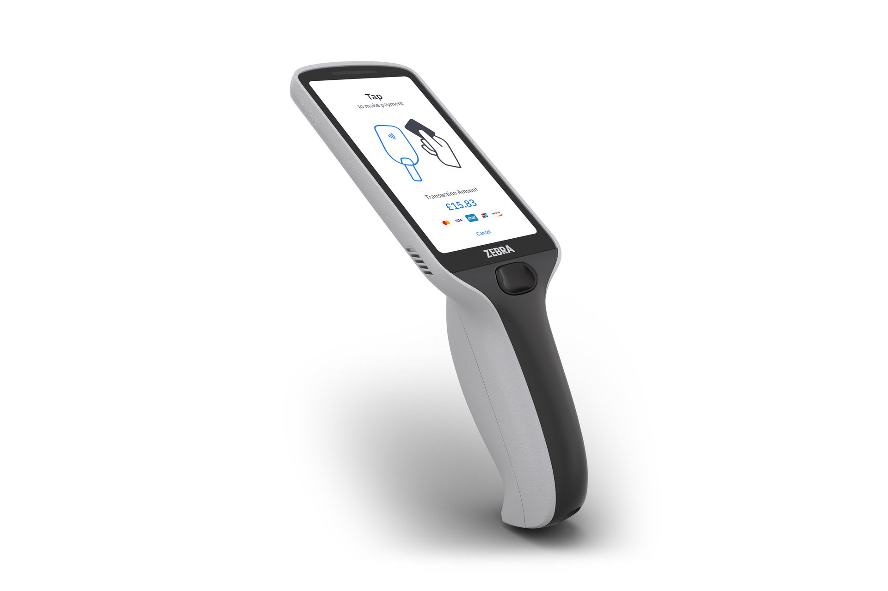
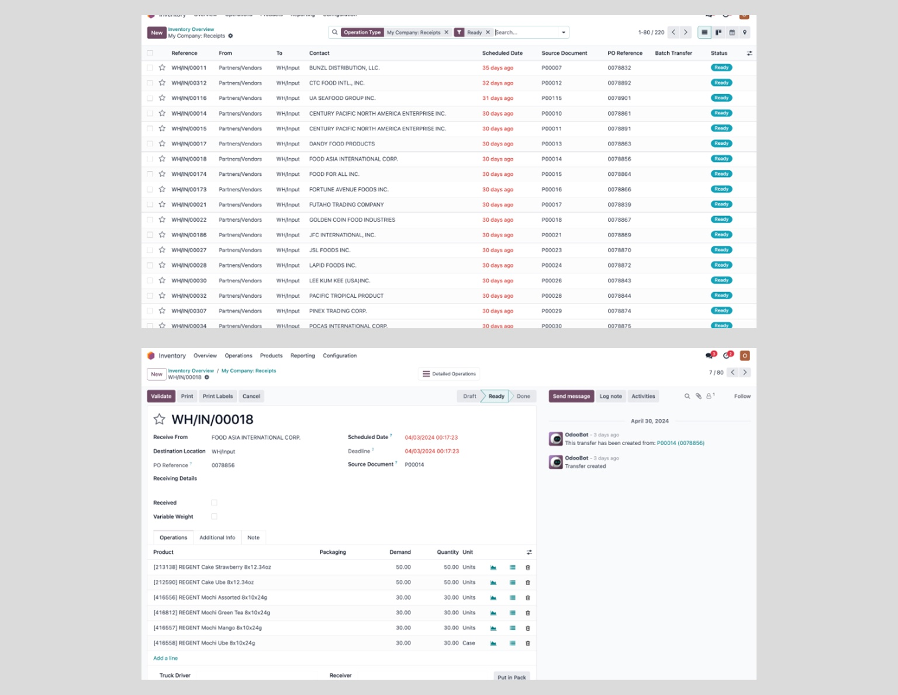
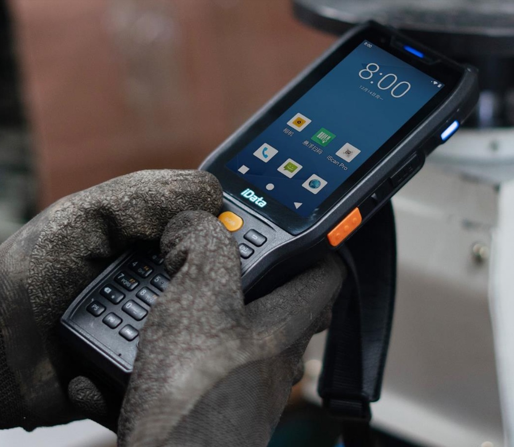
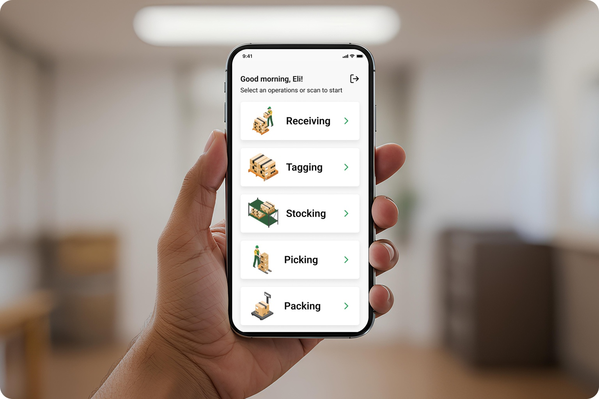
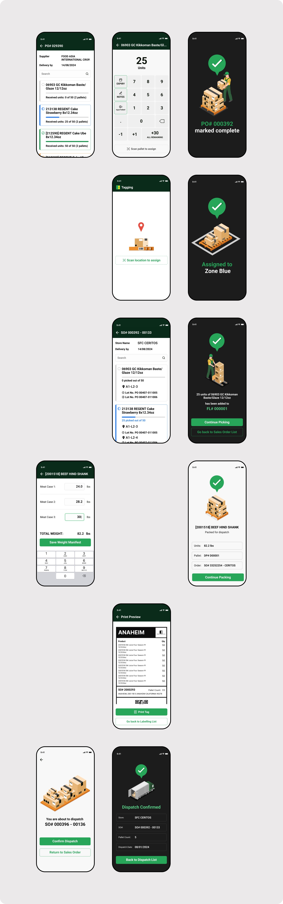
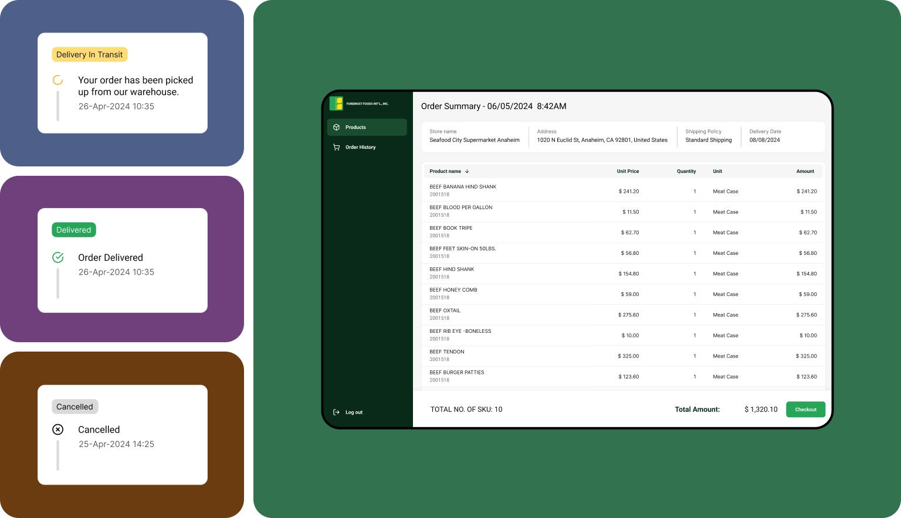
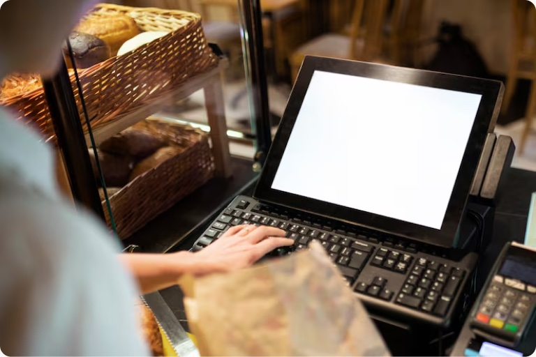

SFC · 2025
Building a Seamless Warehouse Operating System for Seafood City

Overview
SFC's warehouse ran on an outdated Odoo setup, held together by manual entry and employee workarounds.
The goal was a seamless, all-in-one warehouse management app — one system built for everyone a product passes through on its way to a store shelf, from the delivery truck driver at the dock to the receiving manager at the branch.

The Challenge
The people using this app every day aren’t sitting at a desk.
Most of the workday for warehouse staff is spent browsing through lists of products, and checking and re-checking labels, pallet numbers, and shelf designations — standing, moving, often against the clock. A number of them are older workers too, so legibility, low-clutter, and highly accessible interface weren’t a preference, they were a requirement. Every screen had to hold up on an actual warehouse floor, not just in a design review.

The Workflow
The companion app is where the warehousing actually happens.
The mobile app is the primary tool for warehouse stocking: receiving incoming pallets, tagging merchandise, and assigning stock to specific pallet and shelf numbers within zoned, labelled areas of the warehouse. The companion app runs in an android device, plugged-in through a barcode scanner.
Screens like the receiving keypad lean on oversized numerals, single-purpose buttons, and few competing actions at once — designed around hands that are often full and eyes that are tired by the end of a shift, not a phone held at arm’s length in a coffee shop.


Receiving a delivery: confirming quantities against the purchase order, capturing signatures from the truck driver and receiver, then printing a pallet tag with its destination branch and QR code.
Package Dispatching
A portal for the other side of the order.
Store ordering happens through a separate, browser-based portal. A branch manager places an order directly against live warehouse stock, then tracks it in the open — from order placement, through picking and packaging, to dispatch — without needing to call the warehouse to ask where it stands.


The Results
One of the projects I keep coming back to — not for the interface, but for how I got there.
This project put me in the room with the people actually doing the work: talking through their day, sitting in on demo warehouse simulations, and watching first-hand how they track deliveries, label pallets, and tag merchandise.
Designing around a system that already works — instead of replacing it outright — was a different kind of challenge than building for the general public, and a refreshing one. I got to know exactly who I was building for and how they’d actually use what I made.
It’s a small shift, but an important one: building something that makes sense for a particular group of people, rather than everyone.